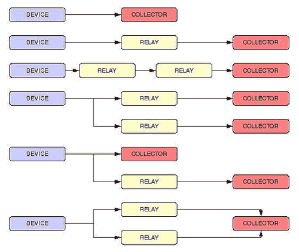

Torna alla pagina di Gestione degli incidenti informatici
:: Log Files e Syslog ::
Ove non meglio specificato, tutti i testi tra virgolette vanno intesi come citazioni letterali dalle slide del prof Dario Forte, 2008.
Definizione di log
Il file log è un record che consente di tener traccia di determinati eventi accaduti all'interno di un sistema o di una rete, ed è formato da una serie di entry che rappresentano le informazioni legate agli eventi stessi. I file log sono una risorsa fondamentale per i response team, che li utilizzano per i seguenti scopi:
- "
troubleshooting e diagnosi problemi", dove per troubleshooting si intende ricerca e riparazione di un guasto
- "
ottimizzazione delle prestazioni di sistemi e reti"
- "
tracciare le attività utente". Questa attività è particolarmente utile per verificare che certi utenti non abbiano compiuto operazioni per le quali non erano autorizzati
- "
fornire informazioni utili per l'investigazione"
Ogni sistema e periferica di rete dovrebbe avere una fonte unica e non duplicata di log, strutturata in modo da essere accessibile a più utenti. In altre parole bisogna fare in modo che più persone possano accedere allo stesso log, ma non che più log tengano traccia della stessa cosa. Si rende perciò necessaria l'introduzione di un sistema rigoroso di gestione dei log, composto da una serie precisa di task e definito nel suo insieme log management.
La generazione dei log può essere continua o schedulata (batch mode). Nel primo caso la registrazione dell'evento avviene in tempo reale, mentre nel secondo solo al momento della chiusura della sessione monitorata. Da segnalare inoltre l'esistenza del cosiddetto log grezzo (o raw), ovvero il primo log disponibile dopo la fase di acquisizione.
Computer security log management
Da quanto detto finora già si intuisce l'enorme importanza dell'analisi dei log, ma anche la grande quantità di dispositivi che li generano all'interno di un contesto aziendale. Per questo motivo diventa fondamentale adottare un sistema di gestione dei log efficiente, chiamato computer security log management (o solo log management) e che si occupa di gestirli nelle loro diverse fasi: generazione, trasmissione, memorizzazione, analisi e disposizione finale dei dati elaborati.
Il lavoro del log management comporta una serie di provvedimenti e pianificazioni a priori, sia per quanto riguarda l'architettura e lo storage dei log, che per la definizione di una serie di policy su rotation (sovrascrittura delle nuove entry sulle vecchie), retention (tempo minimo e massimo di conservazione dei log), field, payload, access e chain of custody. Tutte queste attività dovrebbero essere svolte in fase di preparazione, durante la quale non vanno persi di vista anche altri aspetti:
- garantire che il paradigma
C.I.A. (confidentiality, integrity, availability) sia rispettato per i log generati; eventuali eccezioni vanno giustificate
- separare opportunamente i ruoli e le responsabilità, ad esempio tra amministratore di sistema e response team
- preparare adeguatamente gli addetti alla log analysis
- utilizzare software che adottino un modello di
three tiers architecture, ovvero divisi in tre moduli: interfaccia utente (ad esempio PTK o Autopsy), gestione dei dati (ad esempio database) e logica funzionale (che fa funzionare il tutto)
Tipi di log
I log possono essere suddivisi in tre categorie:
- log di sicurezza, tra i cui compiti vi sono: il monitoraggio della propria infrastruttura di rete e di sicurezza (misurata con metriche opportune), l'identificazione di nuove minacce e il tracciamento delle attività degli utenti/utilizzatori
- log di sistema operativo, che tiene traccia di tutti gli eventi che avvengono in un sistema operativo, compresi quelli relativi alla sicurezza
- log di rete, che non sono soggetti al controllo di sicurezza e sono associati al traffico di rete
E' importante sapere con quale tipo di log abbiamo a che fare per poter poi effettuare tutte le correlazioni (correlation) possibili, ovvero una serie di attività che hanno come obiettivo l'analisi correlata tra i risultati dell'esame sulla macchina compromessa e la log analysis. I punti di correlazione trovati sono da tenere in alta considerazione per rendere più agevole e precisa l'individuazione del responsabile e la ricostruzione dell'accaduto.
Esaminiamo ora nel dettaglio i log di sicurezza e quelli di sistema operativo.
Log di sicurezza
I log di sicurezza tengono traccia di tutti gli eventi del sistema relativi alla sicurezza. I security software sono la fonte primaria di questo tipo di log, e si rivelano particolarmente utili per comprendere le modalità di penetrazione dell'intruder, per agevolare la collaborazione con le forze di polizia e per collezionare il maggior numero possibile di evidence sull'istrusione. Elenchiamone alcuni:
- router e firewall, ovvero dispositivi che bloccano o consentono il traffico di rete in base a policy prestabilite. In entrambi i casi le informazioni sul traffico bloccato sono memorizzate su log, anche se i firewall in particolare consentono un maggior livello di dettaglio e ispezione
- antimalware software, che registra su log tutti i suoi interventi (rilevazione, rimozione, quarantena, aggiornamenti)
- Intrusion Detection System (IDS) e Intrusion Prevention System (IPS). I primi generano log continui, mentre i secondi fanno delle analisi che hanno come obiettivo la prevenzione degli attacchi
- Vulnerability Management Software, responsabile del monitoraggio della cosiddetta "patch installation history" e dello stato delle vulnerabilità della macchina. Agiscono in modalità batch
- "Autentication Server: si occupano di gestire ogni tentativo (riuscito o meno) di autenticazione, inclusa l'origine". Una delle componenti di questo dispositivo è l' OTP, responsabile della generazione delle password che saranno poi registrate nel log
- Network Quarantine Server, che fa a sua volta parte della NAC (Network Access Control). Mantiene i log delle macchine messe in quarantena, ed il loro traffico viene posto in una porzione di rete anch'essa quarantenata. Finché queste macchine non soddisfano determinate policy non potranno rientrare in rete
- Remote Access Server, che non memorizza sui log solo il traffico concesso a un determinato utente ma anche quello bloccato, così che si possa monitorare un'intera sessione indipendentemente dai permessi di accesso alla rete
- Web Proxy, utilizzati come mediatori tra client e server per creare un livello aggiuntivo di sicurezza. Consultare i loro log si rivela spesso un'attività molto utile
Log di sistema operativo
I log di sistema operativo sono quelli che registrano gli eventi dei sistemi operativi di rete, di servizio e di workstation, ma anche di altre applicazioni tra cui quelle viste in precedenza. Possiamo distinguere due tipi principali:
- eventi di sistema, che forniscono informazioni (timestamp compreso) sulle "operazioni eseguite dal sistema operativo e dai suoi componenti", in particolare quelle che non vanno a buon fine o che si risolvono in errore. In alcuni casi è data possibilità all'amministratore di filtrare le categorie di eventi da loggare
- audit, che tiene unicamente traccia degli eventi di sicurezza, ad esempio: autenticazione riuscite/fallite, violazione di policy, accesso ai file e/o risorse, alterazione del sistema, ...
Va detto infine che la maggior parte dei log dei sistemi operativi Unix-like adottano il protocollo Syslog (che studieremo più avanti), mentre quelli Microsoft utilizzano un formato proprietario. A questo proposito va detto che l'analisi di log in formati proprietari è possibile solo grazie a viewer messi a disposizione dalle case di produzione, oppure appellandosi direttamente ad essi (incrociando le dita).
Log rotation e retention
"Con il termine log rotation si indica la metodica con la quale un log viene spostato dalla modalità on-line a quella off-line", ovvero su dispositivi di archiviazione secondari. Questo spostamento può avvenire periodicamente, oppure solo quando la dimensione del file di log ha superato un certo valore. Indipendentemente dal motivo, che va comunque documentato, la log rotation avviene generalmente con i seguenti passaggi:
- estrazione e compressione della porzione di file di log da archiviare
- generazione dell'hash di tale archivio, così da poterne in seguito comprovarne l'integrità
- spostamento in un sistema di raccolta centralizzato, in cui verrà controllato l'hash
Con la log retention vengono invece stabiliti i tempi minimi e massimi di conservazione dei log in un sistema. Non esiste una regola universale, ma molto dipende dalla tipologia di azienda (finanziaria, industriale, pubblica amministrazione, ...) e dall'architettura di log e di storage.
Errori comuni
Di seguito una serie di errori comuni nel processo di log management (dalle slide di Dario Forte, 2008):
- "non abilitare il logging"
- "procedere alla produzione e raccolta dei log senza effettuarne l'analisi"
- "revisionare unicamente i log prodotti dai sistemi perimetrali omettendo i sistemi interni"
- "sviluppare la propria infrastruttura di logging prima di individuare le fonti da cui attingere", quindi "prima di aver deciso cosa raccogliere"
- "memorizzare i log per un periodo troppo breve"
- "prioritizzare le informazioni prima di averle raccolte"
- "ignorare i log applicativi"
- "ricercare solo i pattern riconosciuti pericolosi, omettendo le rimanenti entry dall'analisi"
- "considerare i log raccolti come evidence nonostante non venga pianificato correttamente il processo di generazione e raccolta"
- "sottostimare il volume delle informazioni da raccogliere"
- "ricondurre la disciplina del log management ad un problema di data management"
Cosa fare in caso di incidente
Prima di vedere due casi pratici, forniamo alcune regole generali da rispettare in caso di incidente:
- identificare i punti di raccolta dei log
- contattare l'amministratore di sistema
- contenere il danno
- collezionare i log in locale senza alterarli in alcun modo
- creare un'immagine della macchina compromessa rispettando l'ordine di volatilità delle informazioni
Esempio 1
Un worm ha causato un incidente di sicurezza su una delle tre sottoreti di una rete, cosa facciamo?
- verifichiamo che il nostro antivirus conosca la firma del worm che ha provocato l'incidente, così da capire se garantiva una protezione adeguata contro questa tipologia di malware
- ci assicuriamo che i log siano fisicamente presenti
- effettuiamo la duplicazione dei log
- controlliamo i punti di correlazione dei log file
- verifichiamo se ci sia stata una violazione delle policy
- controlliamo il traffico di entrata e uscita della rete, ad esempio utilizzando uno strumento come
Network Behaviour Analysis Tool, che analizza il payload dei pacchetti. Il traffico è monitorato non solo per motivi di sicurezza ma anche per costruire il grafo di andamento della rete, che dà un'idea sulle performance della rete stessa
Esempio 2
Bisogna risalire al personale interno di un'azienda che ha utilizzato siti pirata, cosa facciamo?
- verifichiamo i log di autenticazione
- cerchiamo il flusso della rete che ha come destinazione i siti pirata
- monitoriamo tale flusso così da poter risalire al colpevole
Syslog
Il Syslog è un protocollo che consente la trasmissione attraverso la rete di messaggi di log da macchine dette Syslog Sender a dispositivi di raccoglimento chiamati Syslog Servers o Syslog Daemon. L'RFC di riferimento è la 3164, molto tecnica, che stabilisce tra le altre cose che i messaggi devono essere trasmessi tramite UDP, in particolare alla porta 514; ciò significa che non si hanno garanzie di consegna, poiché nell'User Datagram Protocol non è previsto l'invio dell'ack da parte del ricevente (per maggiori dettagli consultate le pagine del wiki di Sistemi di elaborazione dell'informazione). Problemi di affidabilità e di autenticazione tra le parti sono dunque da mettere in conto, così come l'esposizione ad altri pericoli come il dropping o lo spoofing di un messaggio.
Esiste tuttavia una versione avanzata del Syslog più orientata alla sicurezza: il Secsyslog, che utilizza il TCP e sfrutta i covert channel.
Il syslog non è sempre abilitato di default poiché comporta un impatto rilevante sulle performance della macchina, impatto che aumenta all'aumentare delle informazioni da monitorare. Per questo motivo l'eventualità di una sua attivazione deve essere valutata con attenzione in fase di preparazione.
Syslog Daemon
Il Syslog Daemon/Server è un'entità passiva che rimane in ascolto dei messaggi syslog a lei diretti. Per passiva si intende che non è lei a fare richiesta dei log da un determinato device, ma sono questi ultimi che autonomamente le inviano i messaggi quando lo ritengono opportuno. Ne consegue che in un'indagine forense andranno controllati sia deamon che sender.
Il mantenimento di un unico syslog deamon è sconsigliato perché rappresenterebbe un Single Point Of Failure, ovvero la sua compromissione ne minerebbe irrimediabilmente l'affidabilità. E' quindi opportuno distribuire i log su più macchine, così che lo sforzo per danneggiarli diventi maggiore.
Attori del protocollo
Per evitare ambiguità con la terminologia definiamo con precisione i vari attori del protocollo:
- Device: "macchina in grado di generare messaggi" (ad esempio firewall, router, ...)
- Relay: "macchina in grado di ricevere messaggi e inoltrarli ad un secondo sistema", il cui utilizzo disinnesca il problema del singol point of failure e consente inoltre una distribuzione del carico di lavoro. Si noti che i relay possono inoltrare i messaggi ad altri relay
- Collector: macchina in grado di ricevere messaggi e memorizzarli senza inoltrarli. La memorizzazione può avvenire su file di testo (tipico dei log grezzi) o su database (tipico dei sistemi avanzati, dato che consente di effettuare query). I collector sono chiamati anche syslog server o "
bidoni centrali" (sic)
- Sender: possono essere sia device che relay, ed inviano i messaggi verso relay o collector senza sapere a priori quali dei due siano;
- Receiver: possono essere sia collector che relay, ovvero dispositivi che ricevono messaggi Syslog
Nella figura seguente sono visualizzati a titolo di esempio una serie di connessioni possibili tra i dispositivi coinvolti in una comunicazione Syslog.

Concludiamo il discorso sugli attori del protocollo sottolineando l'importanza dei controlli di sicurezza sull'architettura Syslog, che devono garantire l'integrità dei messaggi e tenere sotto controllo i loro tempi di latenza, attività quest'ultima fondamentale per il corretto funzionamento di sistemi in tempo reale e dei gestori delle sincronizzazioni.
Pacchetti Syslog
I messaggi Syslog viaggiano attraverso le reti incapsulati in pacchetti, ognuno dei quali non deve superare i 1024 byte di grandezza ed è composto da tre parti: PRI, Header e Msg. Vediamoli nel dettaglio.
PRI
PRI sta per priority part, è composto da 8 bit ed indica il livello di priorità del log. Contiene due informazioni:
- la facility, che indica il componente del sistema operativo che genera il messaggio di log. Ad essa sono dedicati 5 bit, quindi ha 32 possibili valori:
0, 1, 2, ... , 31. I primi sedici valori sono standard, e in particolare i primi cinque sono security sensitive; dal 17 in poi sono personalizzabili
- la severity, che rappresenta il livello di criticità dei log. Ad essa sono riservati i rimanenti 3 bit della priority part, quindi ha 8 possibili livelli in ordine decrescente di gravità (lo 0 è il più grave)
In molti casi è più comodo considerare insieme le due componenti e ciò è possibile attraverso il calcolo del priority value, ottenuto moltiplicando la facility per 8 e quindi aggiungendo al risultato il valore della severity. In formula:
priority value = (facility * 8) + severity
Più basso sarà il valore ottenuto e più urgente sarà l'evento e di conseguenza l'intervento necessario.
Concludiamo il paragrafo sul PRI osservando che solo il sender ha la possibilità (e il dovere) di stabilire il valore di facility e severity, mentre il daemon può solo utilizzarli per funzioni di filtraggio dei pacchetti.
Header
Nell' Header viene tenuta traccia di:
- timestamp che indica la data e l'ora in cui il sistema locale ha generato il messaggio. Lo standard per esprimerlo è il seguente:
mmm dd hh:mm:ss, dove mmm è il mese, dd è il giorno, hh l'ora, mm i minuti e ss i secondi. Notare come non ci sia alcun riferimento all'anno e come la sua veridicità sia legata al corretto funzionamento del clock di sistema
- identificativo della macchina che ha generato il messaggio, che può essere indicata sottoforma di hostname o indirizzo IP
MSG
La terza ed ultima parte di un pacchetto Syslog è il messaggio (MSG) vero e proprio, composto da un tag che indica il nome del programma che l'ha generato ed un content che è il contenuto del messaggio vero e proprio.
Syslogd
Unix utilizza come demone per il logging dell'intero sistema il Syslogd, che offre diverse opzioni di comportamento e una buona configurabilità. Il suo file di configurazione si trova generalmente in /etc/syslog.conf, percorso da conoscere con precisione in quanto sarà uno dei principali obiettivi degli attacker.
Ogni riga del file di configurazione è composta da due campi:
- Selettore, che indica attraverso la specifica di facility e severity su quali eventi o categorie di eventi si intende agire
- Azione, quella da intraprendere sugli eventi indicati dal selettore
La comunicazione con il deamon syslogd può avvenire tramite il programma logger (che ha una sintassi precisa e dedicata), oppure utilizzando librerie per il C (syslog.h), o moduli per Perl e Python.
Torna alla pagina di Gestione degli incidenti informatici